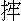

詩曰：
世間字紙藏經同，見者須當付火中。
或置長流清淨處，自然福祿永無窮。
話說上古蒼頡製字，有鬼夜哭。蓋因造化秘密，從此發洩盡了。只這一哭，有好些個來因。假如孔子作《春秋》，把二百四十二年間亂臣賊子心事闡發，凜如斧鉞，遂為萬古綱常之鑒，那些奸邪的鬼豈能不哭！又如子產鑄刑書，只是禁人犯法，流到後來，奸胥舞文，酷吏鍛罪，只這筆尖上邊幾個字斷送了多多少少人？那些屈陷的鬼，豈能不哭！至於後世以詩文取士，憑著暗中朱衣神，不論好歹，只看點頭。他肯點點頭的，便差池些，也會發高科、做高官；不肯點頭的，遮莫你怎樣高才，沒處叫撞天的屈。那些嘔心抽腸的鬼，更不知哭到幾時，才是住手。可見這字的關係，非同小可。況且聖賢傳經講道，齊家治國平天下，多用著他不消說。即是道家青牛騎出去、佛家白馬馱將來，也只是靠這幾個字，致得三教流傳，同於三光。那字是何等之物，豈可不貴重他！每見世間人，不以字紙為意，見有那殘書廢葉，便將來包長包短，以致因而揩台抹棹。棄擲在地，掃置灰塵污穢中。如此作踐，真是罪業深重，假如偶然見了，便輕輕拾將起來，付之水火，有何重難的事，人不肯做。這不肯做，一來只為人不曉得關著禍福，二來不在心上的事，匆匆忽略過了。只要能存心的人，但見字紙，便加愛惜、遇有遺棄，即行收拾，那個陰德可也不少哩！
宋時，王沂公之父愛惜字紙，見地上有遺棄的，就拾起焚燒。便是落在糞穢中的，他畢竟設法取將起來，用水洗淨，或投之長流水中，或候烘曬乾了，用火焚過。如此行之多年，不知收拾淨了萬萬千千的字紙。一日，妻有娠將產，忽夢孔聖人來分付道：「汝家愛惜字紙，陰功甚大。我已奏過上帝，遣弟子曾參來生汝家，使汝家富貴非常。」夢後果生一兒，因感夢中之語，就取名為王曾。後來連中三元，官封沂國公。宋朝一代，中三元的止得三人，是宋庠、馮京與這王曾，可不是最希罕的科名了！誰知內中這一個，不過是惜字紙積來的福，豈非人人做得的事？如今世上人見了享受科名的，那個不稱羨道是難得？及至愛惜字紙這樣容易事，卻錯過了不做，不知為何。且聽小子說幾句：
倉頡制字，爰有妙理。
三教聖人，無不用此。
眼觀穢棄，顙當有泚。
三元科名，惜字而已。
一唾手事，何不拾取？
小子因為奉勸世人惜字紙，偶然記起一件事來。一個只因惜字紙拾得一張故紙，合成一大段佛門中因緣，有好些的靈異在裡頭。有詩為證：
撿墨因緣法寶流，山門珍秘永傳留。
從來神物多呵護，堪笑愚人欲強謀！
卻說唐朝侍郎白樂天，號香山居士，他是個佛門中再來人。專一精心內典，勤修上乘。雖然頂冠束帶，是個宰官身，卻自念佛看經，做成居士相。當時因母病，發願手寫《金剛般若經》百卷，以祈冥佑，散施在各處寺宇中。後來五代、宋、元兵戈擾亂，數百年間，古今名跡，海內亡失已盡。何況白香山一家遺墨，不知多怎地消滅了。唯有吳中太湖內洞庭山一個寺中，流傳得一卷，直至國朝嘉靖年間依然完好，首尾不缺。凡吳中賢士大夫、騷人墨客曾經賞鑒過者，皆有題跋在上，不消說得。就是四方名公游客，也多曾有贊歎頂禮、請求拜觀，留題姓名日月的，不計其數。算是千年來希奇古蹟，極為難得的物事。山僧相傳至寶珍藏，不在話下。
且說嘉靖四十三年，吳中大水，田禾渰盡，寸草不生。米價踴貴，各處禁糶閉糴，官府嚴示平價，越發米不入境了。原來大凡年荒米貴，官府只合靜聽民情，不去生事。少不得有一夥有本錢趨利的商人，貪那貴價，從外方賤處販將米來。有一夥有家當囤米的財主，貪那貴價，從家裡廒中發出米去。米既漸漸輻輳，價自漸漸平減，這個道理也是極容易明白的。最是那不識時務執拗的腐儒做了官府，專一遇荒就行禁糶、閉糴、平價等事。他認道是不使外方糴了本地米去，不知一行禁止，就有棍徒詐害。遇見本地交易，便自聲揚犯禁，拿到公庭，立受枷責。那有身家的怕惹事端，家中有米，只索閉倉高坐。又且官有定價，不許貴賣，無大利息，何苦出糶？那些販米的客人，見官價不高，也無想頭。就是小民私下願增價暗糴，俱怕敗露受責受罰。有本錢的人不肯擔這樣干繫，幹這樣沒要緊的事。所以越弄得市上無米，米價轉高。愚民不知，上官不諳，只埋怨道：「如此禁閉，米只不多。如此抑價，米只不賤。」沒得解說，只囫圇說一句「救荒無奇策」罷了。誰知多是要行荒政，反致越荒的。
閒話且不說。只因是年米貴，那寺中僧侶頗多，坐食煩難。平日檀越也為年荒米少，不來布施。又兼民窮財盡，餓殍盈途，盜賊充斥，募化無路。那洞庭山位在太湖中間，非舟楫不能往來。寺僧平時吃著十方，此際料沒得有凌波出險，載米上門的了。真個是：香積廚中無宿食，淨明缽裡少餘糧。
寺僧無計奈何，內中有一僧，法名辨悟，開言對大眾道：「寺中僧徒不少，非得四五十石米不能度此荒年。如今料無此大施主，難道抄了手坐看餓死不成？我想白侍郎《金剛經》真跡，是累朝相傳至寶，何不將此件到城中尋個識古董人家，當他些米糧且度一歲？到來年有收，再圖取贖，未為遲也。」住持道：「相傳此經值價不少，徒然守著他，救不得饑餓，真是戤米囤餓殺了，把他去當米，誠是算計。但如此年時，那裡撞得個人肯出這樣閒錢、當這樣冷貨？只怕空費著說話罷了。」辨悟道：「此時要遇個識寶太師，委是不能勾。想起來只有山塘上王相國府當內嚴都管，他是本山人，乃是本房檀越，就中與我獨厚。該卷白侍郎的經，他雖未必識得，卻也多曾聽得。憑著我一半面皮，挨當他幾十挑米，敢是有的。」眾僧齊聲道：「既然如此，事不宜遲，只索就過湖去走走。」
住持走去房中，廂內捧出經來，外邊是宋錦包袱包著，揭開裡頭看時，卻是冊頁一般裝的，多年不經裱褙，糨氣已無，周圍鑲紙，多泛浮了。住持道：「此是傳名的古物，如此零落了，知他有甚好處？今將去與人家藏放得好些，不要失脫了些便好。」眾人道：「且未知當得來當不來，不必先自耽憂。」辨悟道：「依著我說，當便或者當得來。只是救一時之急，贖取時這項錢糧還不知出在那裡？」眾人道：「且到贖時再做計較，眼下只是米要緊，不必多疑了。」當下僱了船隻，辨悟叫個道人隨了，帶了經包，一面過湖到山塘上來。
行至相府門前，遠遠望去，只見嚴都管正在當中坐地。辨悟上前稽首，相見已畢，嚴都管便問道：「師父何事下顧？」辨悟道：「有一件事特來與都管商量，務要都管玉成則個。」都管道：「且說看何事。可以從命，無不應承。」辨悟道：「敝寺人眾缺欠齋糧，目今年荒米貴，無計可施。寺中祖傳《金剛經》，是唐朝白侍郎真筆，相傳價值千金，想都管平日也曉得這話的。意欲將此卷當在府上舖中，得應付米百來石，度過荒年，救取合寺人眾生命，實是無量功德。」嚴都管道：「是甚希罕東西，金銀寶貝做的，值此價錢？我雖曾聽見老爺與賓客們常說，真是千聞不如一見。師父且與我看看再商量。」
辨悟在道人手裡接過包來，打開看時，多是零零落落的舊紙。嚴都管道：「我只說是怎麼樣金碧輝煌的，元來是這等悔氣色臉，到不如外邊這包還花碌碌好看，如何說得值多少東西？」都管強不知以為知的逐葉飜飜，直翻到後面去，看見本府有許多大鄉宦名字及圖書在上面，連主人也有題跋手書印章，方喜動顏色道：「這等看起來，大略也值些東西，我家老爺才肯寫名字在上面。除非為我家老爺這名字多值了百來兩銀子，也不見得。我與師父相處中，又是救濟好事，雖是百石不能勾，我與師父五十石去罷。」辨悟道：「多當多贖，少當少贖。就是五十石也罷，省得擔子重了，他日回贖難措處。」當下嚴都管將經包袱得好了，捧了進去。終久是相府門中手段，做事不小。當真出來寫了一張當票，當米五十石，付與辨悟道：「人情當的，不要看容易了。」說罷。便叫開倉斛發。辨悟同道人僱了腳夫，將來一斛一斛的盤明下船，謝別了都管，千歡萬喜，載回寺中不題。
且說這相國夫人，平時極是好善，尊重的是佛家弟子，敬奉的是佛家經卷。那年冬底，都管當中送進一年簿籍到夫人處查算，一向因過歲新正，忙忙未及簡勘。此時已值二月中旬，偶然閒手揭開一葉看去，內一行寫著「薑字五十九號，當洞庭山某寺《金剛經》一卷，本米五十石」。夫人道：「奇怪！是何經卷當了許多米去？」猛然想道：「常見相公說道洞庭山寺內有卷《金剛經》，是山門之寶，莫非即是此件？」隨叫養娘們傳出去，取進來看，不踰時取到。夫人盥手淨了，解開包揭起看時，是古老紙色，雖不甚曉得好處與來歷出處，也知是舊人經卷。便念聲佛道：「此必是寺中祖傳之經，只為年荒將來當米吃了。這些窮寺裡如何贖得去？留在此處褻瀆，心中也不安穩。譬如我齋了這寺中僧人一年，把此經還了他罷，省得佛天面上取利不好看。」分付當中都管說：「把此項五十石作做夫人齋僧之費，速喚寺中僧人，還他原經供養去。」
都管領了夫人的命，正要尋便捎信與那辨悟，教他來領此經。恰值十九日是觀世音生日，辨悟過湖來觀音山上進香，事畢到當中來拜都管。都管見了道：「來得正好！我正要尋山上燒香的人捎信與你。」辨悟道：「都管有何分付？」都管道：「我無別事，便為你舊年所當之經。我家夫人知道了，就發心布施這五十石本米與你寺中。不要你取贖了，白還你原經，去替夫人供養著，故此要尋你來還你。」辨悟見說，喜之不勝，合掌道：「阿彌陀佛！難得有此善心的施主，使此經重還本寺，真是佛緣廣大。不但你夫人千載流傳，連老都管也種福不淺了。」都管道：「好說！」隨去稟知夫人，請了此經出來，奉還辨悟。夫人又分付都管：「可留來僧一齋。」都管遵依，設齋請了辨悟。
辨悟笑嘻嘻捧著經包，千恩萬謝而行。到得下船埠頭，正直山上燒香多人，坐滿船上，卻待開了。辨悟叫住也搭將上去，坐好了開船。船中人你說張家長，我說李家短。不一時，行至湖中央。辨悟對眾人道：「列位說來說去，總不如小僧今日所遇施主，真是個善心喜捨量大福大的了。」眾人道：「是那一家？」辨悟道：「是王相國夫人。」眾人內中有的道：「這是久聞好善的，今日卻如何布施與師父？」辨悟指著經包道：「即此便是大布施。」眾人道：「想是你募緣簿上開寫得多了。」辨悟道：「若是有心施捨，多些也不為奇。專為是出於意外的，所以難得。」眾人道：「怎生出於意外？」辨悟就把去年如何當米，今日如何白還的事說了一遍，道：「一個荒年，合寺僧眾多是這夫人救了的。況且寺中傳世之寶正苦沒本利贖取，今得奉回，實出僥倖。」眾人見說一本經當了五十石米，好生不信，有的道：「出家人慣說大話，那有這事？」有的道：「他又不化我們東西，何故掉謊？敢是真的。」又有的道：「既是值錢的佛經，我們也該看看，一緣一會，也是難得見的。」要與辨悟取出來看。
辨悟見一夥多是些鄉村父老，便道：「此是唐朝白侍郎真筆，列位未必識認，褻褻瀆瀆，看他則甚？」內中有一個教鄉學假斯文的，姓黃號丹山，混名黃撮空，聽得辨悟說話，便接口道：「師父出言太欺人！甚麼白侍郎黑侍郎，便道我們不認得？那個白侍郎，名字叫得白樂天，《千家詩》上多有他的詩，怎欺負我不曉得？我們今日難得同船過湖，也是個緣分，便大家請出來看看古跡。」眾人聽得，盡拍手道：「黃先生說得有理。」一齊就去辨悟身邊，討取來看。
辨悟四不拗六，抵當眾人不住，只得解開包袱，攤在艙板上，揭開經來。那經葉葉不黏連的了，正揭到頭一板，怎當得湖中風大？忽然一陣旋風，攪到經邊一掀，急得辨悟忙將兩手撳住，早把一葉吹到船頭上。那時，辨悟只好按著，不能脫手去取，忙叫眾人快快收著。眾人也大家忙了手腳，你挨我擠，吆吆喝喝，磕磕撞撞，那裡

得著？說時遲，那時快，被風一捲，早捲起在空中。原來一年之中，惟有正二月的風是從地下起的，所以小兒們放紙鳶風箏，只在此時。那時是二月天氣，正好隨風上去，那有下來的，風恰恰吹來還你船中？況且太湖中間瀇瀇漾漾的所在，沒弄手腳處，只好共睜著眼，望空仰看。但見：天際飛衝，似炊煙一道，直上雲中。蕩漾如游絲幾個翻身。紙鳶到處好為鄰，俊鶻飛來疑是伴。底下叫的叫，跳的跳，只在湖中一葉舟上邊。往一往，來一來，直通海外三千國。不勝得補青天的大手抓將住，沒處借繫白日的長繩縛轉來。
辨悟手按著經卷，仰望著天際，無法施展，直看到望不見才住。眼見得這一紙在爪哇國裡去了，只叫得苦。眾人也多呆了，互相埋怨。一個道：「才在我手邊，差一些兒不拿得住。」一個道：「在我身邊飛過，只道你來拿，我住了手。」大家唧噥。一個老成的道：「師父再看看，敢是吹了沒字的素紙還好。」辨悟道：「那裡是素紙！剛是揭開頭一張，看得明明白白的。」眾人疑惑，辨悟放開雙手看時，果然失了頭一板。辨悟道：「千年古物，誰知今日卻弄得不完全了！」忙把來疊好，將包包了，紫漲了面皮，只是怨悵。眾人也多懊悔，不敢則聲。黃撮空沒做道理處，文謅謅強通句把不中款解勸的話。看見辨悟不喜歡，也再沒人敢討看了。
船到山邊，眾人各自上岸散訖。辨悟自到寺裡來，說了相府白還經卷緣故，合寺無不歡喜贊歎。卻把湖中失去一葉的話，瞞住不說。寺僧多是不在行的，也沒有人翻來看看，交與住持收拾過罷了。
話分兩頭，卻說河南衛輝府，有一個姓柳的官人，補了常州府太守，擇日上任。家中親眷設酒送行，內中有一個人，乃是個博學好古的山人，曾到蘇、杭四處遊玩訪友過來，席間對柳太守說道：「常州府與蘇州府接壤，那蘇州府所屬太湖洞庭山某寺中，有一件希奇的物事。乃是白香山手書《金剛經》。這個古跡價值千金，今老親丈就在鄰邦，若是有個便處，不可不設法看一看。」那個人是柳太守平時極尊信的，他雖不好古董，卻是個極貪的性子，見說了值千金，便也動了火，牢牢記在心上。到任之後，也曾問起常州鄉士大夫，多有曉得的，只是蘇、松隔屬，無因得看。他也不是本心要看，只因千金之說上心，希圖頻對人講，或有奉承他的解意了，購求來送他未可知。誰知這些聽說的人道是隔府的東西，他不過無心問及，不以為意。
以後，在任年餘，漸漸放手長了。有幾個富翁為事打通關節，他傳出密示，要蘇州這卷《金剛經》。詎知富翁要銀子反易，要這經卻難，雖曾打發人尋著寺僧求買，寺僧道是家傳之物，並無賣意。及至問價，說了千金。買的多不在行，伸伸舌，搖搖頭，恐怕做錯了生意，折了重本，看不上眼。不是算了，寧可苦著百來兩銀子送進衙去，回說「《金剛經》乃他寺內鎮庫之物，不肯賣的，情願納價罷了。」太守見了白物，收了頑涎，也不問起了。如此不止一次。
這《金剛經》到是那太守發科分起發人的丹頭了，因此明知這經好些難取，一發上心。有一日，江陰縣中解到一起劫盜，內中有一行腳頭陀僧，太守暗喜道：「取《金剛經》之計，只在此僧身上了。」一面把盜犯下在死囚牢裡，一面叫個禁子到衙來，悄悄分付他道：「你到監中，可與我密密叮囑這行腳僧。我當堂再審時，叫他口裡扳著蘇州洞庭山某寺，是他窩贓之所，我便不加刑罰了，你卻不可洩漏討死吃！」禁子道：「太爺分付，小的性命恁地不值錢？多在小的身上罷了。」禁子自去依言行事。
果然，次日升堂，研問這起盜犯，用了刑具。這些強盜各自招出贓仗窩家，獨有這個行腳僧不上刑具，就一口招道贓在洞庭山某寺窩著，寺中住持叫甚名字。原來行腳僧人做歹事的，一應荒廟野寺投齋投宿，無處不到，打聽做眼。這寺中住持姓名，恰好他曉得的，正投太守心上機會。太守大喜，取了供狀，疊成文卷，一面行文到蘇州府捕盜廳來，要提這寺中住持。差人賷文坐守，捕廳僉了牌，另差了兩個應捕，駕了快船，一直望太湖中洞庭山來。真個：
人似饑鷹，船同蜚虎。鷹在空中思攫食，虎逢到處立吞生。靜悄村墟，地神號鬼哭：安閒舍宇，登時犬走雞飛。即此便是活無常，陰間不數真羅剎。
應捕到了寺門前，雄糾糾的走將入來，問道：「那一個是住持？」住持上前稽首道：「小僧就是。」應捕取出麻繩來便套。住持慌了手腳道：「有何事犯，便直得如此？」應捕道：「盜情事發，還問甚麼事犯！」眾僧見住持被縛，大家走將攏來，說道：「上下不必粗魯！本寺是山塘王相府門徒，等閒也不受人欺侮。況且寺中並無歹人，又不曾招接甚麼游客住宿，有何盜情干涉？」應捕見說是相府門徒，又略略軟了些，說道：「官差吏差，來人不差。我們捕廳因常州府盜情事，扳出與你寺干連，行關守提。有干無干，當官折辨，不關我等心上，只要打發我等起身！」一個應捕，假做好人道：「且寬了縛，等他去周置，這裡不怕他走了去。」
住持脫了身，討牌票看了，不知頭繇。一面商量收拾盤纏，去常州分辨；一面將差使錢送與應捕。應捕嫌多嫌少，詐得滿足了才住手。應捕帶了住持下船，辨悟叫個道人跟著，一同隨了住持，緩急救應。到了捕廳，點了名，辦了文書，解將過去。免不得書房與來差多有了使費。住持與辨悟、道人，共是三人，僱了一個船，一路盤纏了來差，到常州來。
說話的，你差了。隔府關提，盡好使用支吾，如何去得這樣容易？看官有所不知，這是盜情事，不比別樣閒訟，須得出身辨白，不然怎得許多使用？所以只得來了。未見官時，辨悟先去府中細細打聽劫盜與行腳僧名字、來蹤去跡，與本寺沒一毫影響，也沒個仇人在內。正不知禍根是那裡起的，真摸頭路不著。
說話間，太守升堂。來差投批，帶住持到。太守不開言問甚事繇，即寫監票發下監中去。住持不曾分說得一句話，竟自黑碌碌地吃監了。太守監罷了住持，喚原差到案前來，低問道：「這和尚可有人同來麼？」原差道：「有一個徒弟、一個道人。」太守道：「那徒弟可是了事的？」原差道：「也曉得事體的。」太守道：「你悄地對那徒弟說，可速回寺中去取那本《金剛經》來，救你師父，便得無事。若稍遲幾日，就討絕單了。」原差道：「小的去說。」
太守退了堂，原差跌跌腳道：「我只道真是盜情，原來又是甚麼《金剛經》！」蓋只為先前借此為題詐過了好幾家，衙門人多是曉得的了，走去一十一五對辨悟說了。辨悟道：「這是我上世之物，怪道日前有好幾起常州人來寺中求買，說是府裡要，我們不賣與他。直到今日，卻生下這個計較，陷我師父，強來索取，如今怎麼處？」原差道：「方才明明分付稍遲幾日就討絕單。我老爺只為要此經，我這裡好幾家受了累。何況是你本寺有的，不送得他，他怎肯住手，卻不枉送了性命？快去與你住持師父商量去！」
辨悟就央原差領了到監裡，把這些話一一說了。住持道：「既是如此，快去取來送他，救我出去罷了。終不成為了大家門面的東西，斷送了我一個人性命罷？」辨悟道：「不必二三，取了來就是。」對原差道：「有煩上下代稟一聲，略求寬容幾日，以便往回。師父在監，再求看覷。」原差道：「既去取了，這個不難，多在我身上，放心前去。」
辨悟留下盤纏與道人送飯，自己單身，不辭辛苦，星夜趕到寺中，取了經卷，復到常州。不上五日，來會原差道：「經已取來了，如何送進去？」原差道：「此是經卷，又不是甚麼財物！待我在轉桶邊擊梆，稟一聲，遞進去不妨。」果然原差遞了進去。太守在私衙，見說取得《金剛經》到，道是寶物到了，合衙人眷多來爭看。打開包時，太守是個粗人，本不在行，只道千金之物，必是怎地莊嚴。看見零零落落，紙色晦黑，先不像意。揭開細看字跡，見無個起首，沒頭沒腦。看了一會，認有細字號數，仔細再看，卻原來是第二葉起的。太守大笑道：「凡事不可虛慕名，雖是古跡，也須得完全才好。今是不全之書，頭一板就無了，成得甚用？說甚麼千金百金，多被這些酸子傳聞誤了，空費了許多心機。難為這個和尚坐了這幾日監，豈不冤枉！」內眷們見這經卷既沒甚麼好看，又聽得說和尚坐監，一齊攛掇，叫還了經卷，放了和尚。太守也想道沒甚緊要，仍舊發與原差，給還本主。衙中傳出去說：「少了頭一張，用不著，故此發了出來。」
辨悟只認還要補頭張，懷著鬼胎道：「這卻是死了！」正在心慌，只見連監的住持多放了出來。原差來討賞，道：「已此沒事了。」住持不知緣故，原差道：「老爺起心要你這經，故生這風波，今見經不完全，沒有甚麼頭一張，不中他意，有些懊悔了。他原無怪你之心，經也還了，事也罷了。恭喜！恭喜！」
住持謝了原差，回到下處。與辨悟道：「那裡說起，遭此一場橫禍！今幸得無事，還算好了。只是適才聽見說經上沒了了頭張，不完全，故此肯還。我想此經怎的不完全？」辨悟才把前日太湖中眾人索看，風捲去頭張之事，說了一遍，住持道：「此天意也！若是風不吹去首張，此經今日必然被留，非復我山門所有了。如今雖是缺了一張，後邊名跡還在，仍舊歸吾寺寶藏，此皆佛天之力。」喜喜歡歡，算還了房錢、飯錢，師徒與道人三人眾僱了一個船，同回蘇州。
過了滸墅關數里，將到楓橋，天已昏黑，忽然風雨大作，不辨路徑。遠遠望去，一道火光燭天，叫船家對著亮處只管搖去。其時風雨也息了，看看至近，卻是草舍內一盞燈火明亮，聽得有木魚聲。船到岸邊，叫船家纜好了。辨悟踱上去，叩門討火。門還未關，推將進去，卻是一個老者靠著桌子誦經，見是個僧家，忙起身敘了禮。辨悟求點燈，老者打個紙捻兒，蘸蘸油點著了，遞與辨悟。
辨悟接了紙捻，照得滿屋明亮，偶然抬頭帶眼見壁間一幅字紙黏著，無心一看，吃了一驚，大叫道：「怪哉！怪哉！」老者問道：「師父見此紙，為何大驚小怪？」辨悟道：「此話甚長！小舟中還有師父在內，待小僧拿火去照了，然後再來奉告，還有話講。」老者道：「老漢是奉佛弟子，何不連尊師接了起來？」老者就叫小廝祖壽出來，同了辨悟到舟中，來接那一位師父。
辨悟來到船上，先叫住持道：「師父快起來！不但投著主人，且有奇事了！」住持道：「有何奇事？」辨悟道：「師父且到裡面見了主人，請看一件物事。」住持同了辨悟走進門來，與主人相見了。辨悟拿了燈，拽了住持的手，走到壁間，指著那一幅字紙道：「師父可認認看。」住持抬眼一看，只見首一行是「金剛般若波羅密經」，第二行是「法會因由分第一」，正是白香山所書，乃經中之首葉，在湖中飄失的。拍手道：「好像是吾家經上的，何緣得在此處？」老者道：「賢師徒驚怪此紙，必有緣故。」辨悟道：「老丈肯把得此紙的根繇一說，愚師徒也剖心相告。」老者擺著椅子道：「請坐了獻茶，容老漢慢講。」
師徒領命，分次坐了。奉茶已畢，老者道：「老漢姓姚，是此間漁人。幼年不曾讀書，從不識字，只靠著魚蝦為生。後來中年，家事儘可度日了，聽得長老們說因果，自悔作業太多，有心修行。只為不識一字，難以唸經，因此自恨。凡見字紙，必加愛惜，不敢作踐，如此多年。前年某月某日晚間，忽然風飄甚麼物件下來，到於門首。老漢望去，只看見一道火光落地，拾將起來，卻是一張字紙。老漢驚異，料道多年寶惜字紙，今日見此光怪，必有奇處，不敢褻瀆，將來黏在壁間，時常頂禮。後來有個道人到此見了，對老漢道：『此《金剛經》首葉，若是要念全經，我當教汝。』遂手出一卷，教老漢念誦一遍，老漢隨口念過，心中豁然，就把經中字一一認得。以後日漸增加，今頗能遍歷諸經了。記得道人臨別時，指著此紙道：『善守此幅，必有後果。』老漢一發不敢怠慢，每念誦時，必先頂禮。今兩位一見，共相驚異，必是曉得此紙的來歷了。」
住持與辨悟同聲道：「適間迷路，忽見火光沖天，隨亮到此，卻只是燈火微明，正在怪異。方才見老丈見教，得此紙時，也見火光。乃知是此紙顯靈，數當會合。老丈若肯見還，功德更大了。」老者道：「非師等之物，何云見還？」辨悟道：「好教老丈得知，此紙非凡筆，乃唐朝侍郎白香山手跡也，全經一卷，在吾寺中，海內知名。吾師為此近日被一個狠官人拿去，強逼要獻，幾喪性命，沒奈何只得獻出。還虧得前年某月某日湖中遇風，飄去首葉，那官人嫌他不全，方得重還。今日正奉歸寺中供養，豈知卻遇著所失首葉在老丈處，重得贍禮。前日若非此紙失去，此經已落他人之手。今日若非此紙重逢，此經遂成不全之文。一失一得，不先不後，兩番火光，豈非韋馱尊天有靈，顯此護法手段出來麼？」
老者似信不信的答應。辨悟走到船內，急取經包上來，解與老者看，乃是第二葉起的。將來對著壁間字法紙色，果然一樣無差。老者歎異，念佛不已，將手去壁間揭下來，合在上面，長短闊狹無不相同。一卷經完完全全了，三人盡皆歡喜。
老者分付治齋相款，就留師徒兩人同榻過夜。住持私對辨悟道：「起初我們恨柳太守，如今想起來，也是天意。你失去首葉，寺中無一人知道，珍藏到今。若非此一番跋涉，也無從遇著原紙來完全了。」辨悟道：「上天曉得柳太守起了不良之心，怕奪了全捲去，故先吹掉了一紙，今全卷重歸，仍舊還了此一紙，實是天公之巧，此 之靈！想此老亦是會中人，所云道人，安知不是白侍郎托化來的！」住持道：「有理，有理！」
是夜，姚老者夢見韋馱尊天來對他道：「汝幼年作業深重，虧得中年回首，愛惜字紙。已命香山居士啟汝天聰，又加守護經文，完成全卷，陰功更大，罪業盡消。來生在文字中受報，福祿非凡，今生且賜延壽一紀，正果而終。」老者醒來，明明記得。
次日，對師徒二人道：「老漢愛護此紙經年，今見全經，無量歡喜。雖將此紙奉還，老漢不能忘情。願隨老師父同行，出錢請個裱匠，到寺中重新裝好，使老漢展誦幾遍，方為稱懷。」師徒二人道：「難得檀越如此信心，實是美事，便請下船同往敝寺隨喜一番。」
老者分付了家裡，帶了盤纏，喚小廝祖壽跟著，又在城裡接了一個高手的裱匠，買了作料，一同到寺裡來。盤桓了幾日，等裱匠完工，果然裱得煥然一新。便出襯錢請了數眾，展念《金剛經》一晝夜，與師徒珍重而別。
後來，每年逢誕日或佛生日，便到寺中瞻禮白香山手跡一遍，即行持念一日，歲以為常。年過八十，到寺中沐浴坐化而終。寺中寶藏此卷，聞說至今猶存。有詩為證：
一紙飛空大有緣，反因失去得周全。
拾來寶惜生多福，故紙何當浪棄捐！
小子不敢明說寺名，只怕有第二個象柳太守的尋蹤問跡，又生出事頭來。再有一詩笑那太守道：
傖父何知風雅緣，貪看古跡只因錢。
若教一卷都將去，寧不冤他白樂天。
本章完!